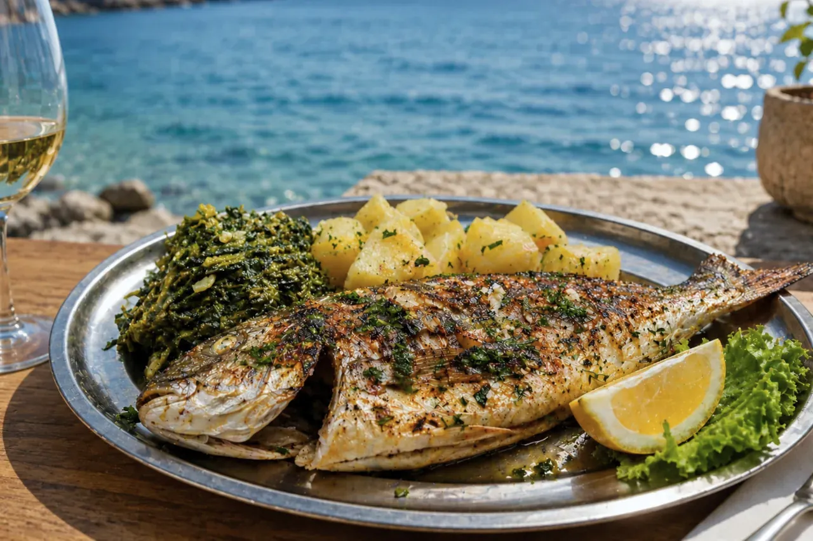
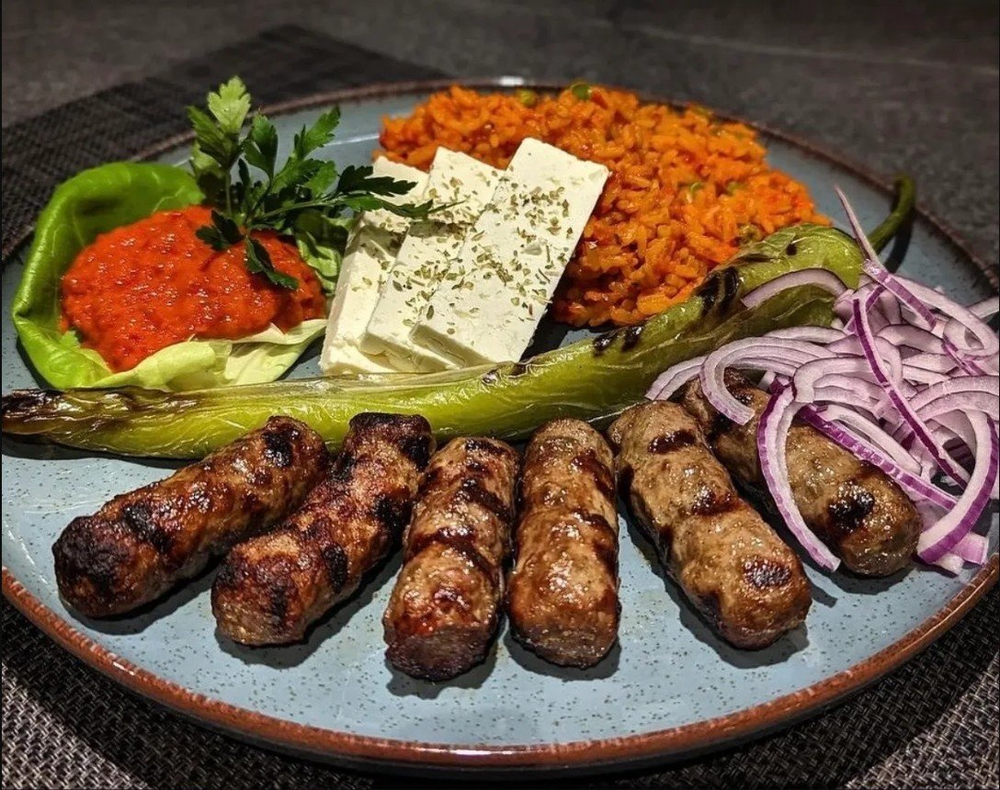
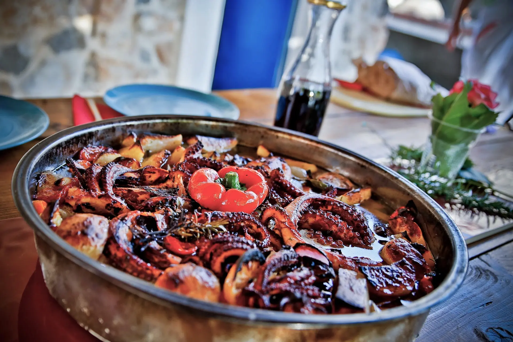
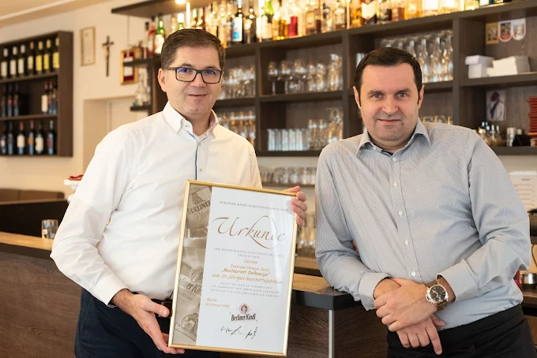
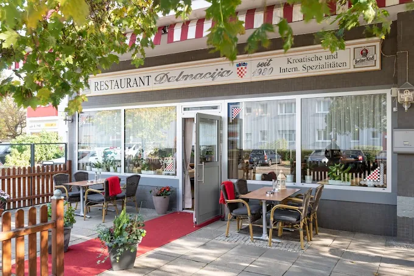
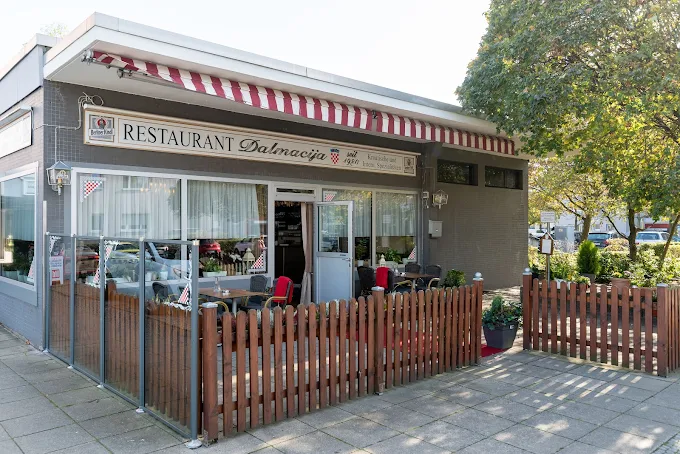
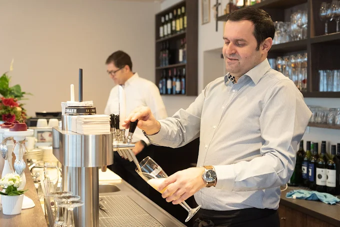

Dalmacija
Kroatische Spezialitäten seit 1980 in Berlin
Ein Stück Dalmatien in Berlin
Herzlich willkommen
Willkommen im Restaurant DalmacijaTraditionelle kroatische Küche seit 1980
Seit über 40 Jahren verwöhnen wir unsere Gäste mit traditionellen kroatischen Gerichten, frischen Zutaten und einer gemütlichen Atmosphäre mitten in Berlin.
Entdecken Sie die Vielfalt der dalmatinischen Küche und genießen Sie ein Stück Kroatien in Berlin.
Mehr über uns
Mediterraner Genuss mit TraditionTraditionelle Rezepte
Seit 1980
Frischer Fisch
Adriatischer Genuss
Ausgewählte Weine
Kroatische & internationale Weine
Gemütliche Atmosphäre
Ein Stück Dalmatien in Berlin
Unsere Spezialitäten
Entdecken Sie einige unserer beliebtesten Gerichte aus der kroatischen und dalmatinischen Küche.

Grillspezialitäten
Saftige Fleischgerichte und traditionelle Spezialitäten direkt vom Grill.
Mehr entdecken
Dalmatinische Küche
Authentische Gerichte mit mediterranen Zutaten und traditionellem Geschmack.
Mehr entdeckenEin Stück Dalmatien in Berlin
Entdecken Sie unser Restaurant, unsere Spezialitäten und die gemütliche Atmosphäre.




Besuchen Sie uns
Genießen Sie traditionelle kroatische Küche und dalmatinische Gastfreundschaft mitten in Berlin.
Adresse
Dalmacija Restaurant
Quäkerstraße 2
13403 Berlin-Reinickendorf